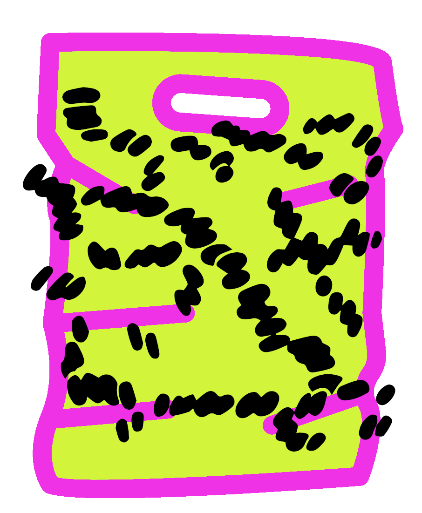

18 Fastq exercise

In this exercise you will read in a fastq file, carry out some filtering, and then writing the filtered data to a new fastq file.
The data comes from the paper: "Identification of plastic-associated species in the Mediterranean Sea using DNA metabarcoding with Nanopore MinION".
They had a lot of different samples but our sample (SRR11554953) contains 16S sequences from a polyethylene food bag that has been in the Mediterranean sea for a month. The researchers carried this out as they were interested in the organisms present in the "plastisphere bioata".
The researchers used MinION sequencing to target the full 1.5 kb-long 16S rRNA gene for bacterial profiling.
To have a smaller dataset the fastq file you will be using only contains the first 10,000 sequences from the sample. The file is called "SRR11554953.10k.fastq".
For this exercise create and use a new notebook called "09-Fastq_exercise".
18.1 Fastq challenge 1

For you first challenge, read in the fastq file ("SRR11554953.10k.fastq") and count the number of sequences there are. Print this number.
Tip: Remember to load the module and library for _loadingreading/parsing fastq files into python.
18.2 Fastq challenge 2

In the paper they remove reads with an average/mean quality that is less than 10. Therefore you will do the same thing.
Carry out the following steps:
- Read in the fastq file ("SRR11554953.10k.fastq") as a variable called "seq_data".
- Use a minimum average phred quality of 10 to filter reads. I.e. retain reads with an average quality that is equal to or greater than 10.
- Create a variable called "q10_filtered_records" to contain the reads that passed the filter.
- At the end of the code print the statement:
- "The number of retained sequences after filtering reads with a mean quality less than 10 is: <number>".
- Ensure you can easily change the minimum quality.
Tip: You can extract the quality scores from a record as a list with:
#F2
#Read in data
seq_data = SeqIO.parse("SRR11554953.10k.fastq", "fastq")
#Set minimum mean quality threshold
min_qual = 10
#List for filtered sequences
q10_filtered_records = []
#Loop through records
for record in seq_data:
#Set phred score list
phred_score_list = record.letter_annotations["phred_quality"]
#Calculate average/mean phred
mean_phred = sum(phred_score_list)/len(phred_score_list)
#If to determine if quality higher or equal to 10
if mean_phred >= min_qual:
#Add threshold passing record to filtered list
q10_filtered_records.append(record)
#Print
print("The number of retained sequences after filtering reads with a mean quality less than " +
str(min_qual) + " is: " + str(len(q10_filtered_records.append)))In this case none of the reads were removed as they were all high quality.
18.3 Fastq challenge 3

Are last filtering didn't remove any reads so prior to length filtering we will check the lengths of the reads.
Carry out the following tasks:
- With your variable "q10_filtered_records" create a list called "seq_lengths" which contains all the lengths of all the sequences.
- Print the length of the shortest read and longest read.
- Tip: The functions
min()andmax()can be used on an intger list.
- Calculate the number of sequences with length ranges of: 1150-1199, 1200-1249, 1250-1299, 1300-1349, 1350-1399, 1400-1449, & 1500-1549.
- Save these values in a list called "range_counts".
- Creating the following list may prove useful:
range_starts = [1150,1200,1250,1300,1350,1400,1450,1500] - Print the "range_counts".
#F3.1
#Create empty list of seq lengths
seq_lengths = []
#Loop through records
for record in q10_filtered_records:
#Add seqeunce length to list
length = len(record.seq)
seq_lengths.append(length)
#Print
print(seq_lengths)#F3.3
#Create list of range starts
range_starts = [1150,1200,1250,1300,1350,1400,1450,1500]
#Create empty list for counts
range_counts = []
#Loop through range starts
for start in range_starts:
#Create count variable
count = 0
#Loop through list of lengths
for length in seq_lengths:
#If length in range add to current count
if length >=start and length < (start + 50):
count = count + 1
#Add count to count list
range_counts.append(count)
#Print
print(range_counts)You'll notice that the majority of reads are in the length range of 1350-1449. However, there is a range of lengths.
18.4 Fastq challenge 4

Its time to filter the sequences ("q10_filtered_records") by lengths. Use a minimum length of 1250 and a maximum length of 1450 (these lengths are chosen arbitrarily for this example). Create a variable called "q10_length_filtered_records" to contain the length filtered reads.
The print the statement: "The number of reatined sequences after filtering reads shorter than 1250bps and longer than 1450bps is: <number>"
#F4
#Set min and max length thresholds
min_length = 1250
max_length = 1450
#List for retained sequences
q10_length_filtered_records = []
#Loop through records
for record in q10_filtered_records:
#If condition for length thresholds
if len(record.seq) >= min_length and len(records.seq) <= max_length:
#Add record to retained records
q10_length_filtered_records.append(record)
#Print
print("The number of reatined sequences after filtering reads shorter than " +
str(min_length) + "bps and longer than " + str(max_length) +
"bps is: " + str(len(q10_length_filtered_records)))18.5 Fastq challenge 5

For the last challenge, write the data in "q10_length_filtered_records" to a fastq file called "SRR11554953.10k.filtered.fastq".
18.6 Fastq exercise conclusion

Stupendous! You have finished the last exercise of this workshop.
In these challenges you learnt how to read in a fastq file, interrogate the lengths of the sequences, carry out some filtering, and finally write the filtered data to a new file.
Thanks for your hard work. You have learnt a lot throughout this course but there is always more python to learn. There is the appendix in this book which points to more resources and there is also a supplementary book with some more things you can learn. I hope this book has given you a good foundation for this language.